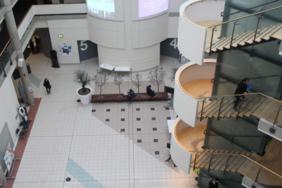

Study Areas
Geoffrey Manton Building
The Journalism, Information and Communications department is located within the Geoffrey Manton building which is located off Oxford Road. For directions you can view our contact us page.
The Geoffrey Manton building has a variety of study areas that are tailored to your specific learning needs. Should you need a quiet learning environment in order to strive then it is provided.
Computer Labs
There are four computer laboratories within Geoffrey Manton with around 120 PCs and iMacs, along with up-to-date software and devices available for printing and scanning. These computer laboratories provide areas for students to study, work on coursework and develop.
Multimedia Resource Library
The Multimedia Resource Library is a very popular study area within the department, which is mainly due to its specialised facilities and atmosphere. There is a wide range of students that use the Multimedia Resource Library including first, second and third year students, which makes it a great area to study.
If you prefer a quiet area to study in then there are independent meeting rooms off the main facility, which is perfect for group or individual projects. Along with this, the main area features a large host of iMacs with up-to-date creative software such as the Adobe suite, which is utilised everyday by department students.
Social Study Areas
Along with being dedicated to helping students develop and thrive at university the study areas within the department act as social hubs for students to interact with each other, there are groups and students from different years. If you are interested in developing friendships and connections within the department then the Geoffrey Manton study areas are a great place to start.
Darren Blacow, a current second year student within the department, said that "The study areas within the department have really helped me develop as a student and I’ve met a great group of friends just from using them."